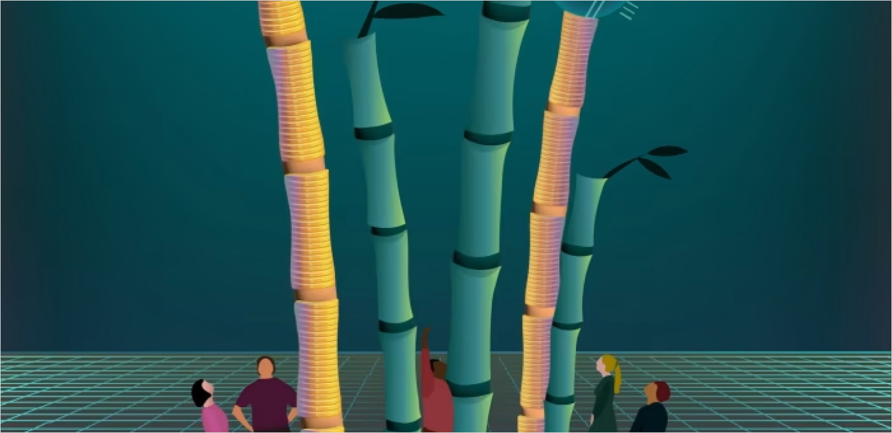

영국 파이낸셜 타임즈가 아시아 태평양 지역 고성장 기업(FT High
Growth Companies Asia-Pacific 2023)을 발표했습니다. 파이낸셜
타임즈와 글로벌 리서치 전문기관 스태티스타(Statista)는 매년
아시아 태평양의 13개 국가의 기업 중 높은 성장률을 보인 500개
기업의 순위를 조사해 공개합니다. 올해까지 총 5번 발표했으며
아키사운드가 음향업계에서는 최초로 3회 연속 선정되었습니다.
올해는 245위에 랭크되었으며. 2021년은 62위, 2022년은 327위로
이름을 올렸습니다.2023년 전체 상위 500개 기업 중에 일본이 136개,
한국이 78개, 싱가포르 75개. 인도 73개, 호주 63개 등이 뒤를
이었습니다.